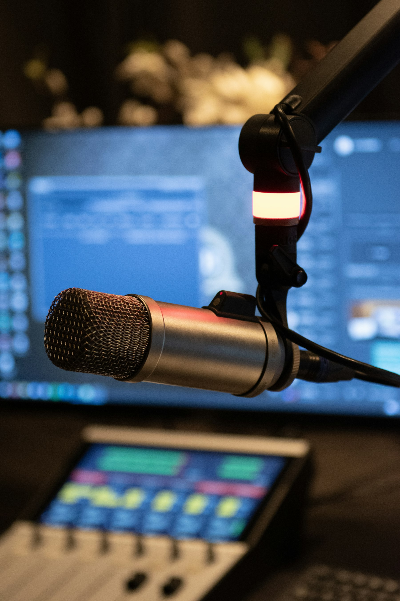

App Loopback
只混你選的程式聲音，不是整個 Windows 系統音一起進來。
MicTool 把 Talk / Sing、變聲、Soundboard、全域快捷鍵和 App Loopback 放進同一套工作流程。你可以更精準地把聲音送進 OBS、Discord 或其他軟體。

少一點字，多一點可視化。
只混你選的程式聲音，不是整個 Windows 系統音一起進來。
講話、唱歌、變聲各有不同節奏，不必每次都從零開始調。
音效、快捷鍵、背景操作與系統匣，適合演出中快速切換。
用情境理解，比參數列表更快。
把麥克風處理後送進虛擬音訊裝置，再交給 OBS。
保留麥克風控制，必要時再加上特定程式聲音。
伴奏、音效板、快捷鍵和變聲可以集中管理。
第一次上手先照這三步。
先設定麥克風和主輸出，需要時再補 Monitor。
講話用 Talk，唱歌用 Sing，需要混伴奏就加 App Loopback。
把輸出指到你要的虛擬裝置或目的地，就能開始使用。
從 GitHub Releases 下載後解壓縮整個資料夾，執行 `MicTool-NoAI.exe` 就能開始。